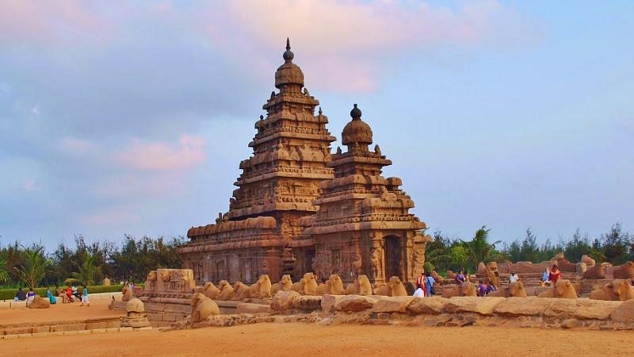

Mahabalipuram

Mahabalipuram, also known as Mamallapuram, is famous for its ancient rock-cut temples and monuments that date back to the 7th and 8th centuries AD. The architectural style of Mahabalipuram is primarily influenced by the Dravidian style of architecture, which is typical of South India. Here are some key features of the architecture of Mahabalipuram:
1. Monolithic Temples: Many of the structures in Mahabalipuram are carved from single large rocks, showcasing the skill of ancient Indian craftsmen. The most famous example is the Shore Temple, which is made from granite and consists of several monolithic
2. Cave Temples: Mahabalipuram is home to several cave temples that are carved out of rock faces. These temples often feature intricate carvings of Hindu gods and mythological scenes.
3. Rathas (Chariots): The Pancha Rathas (Five Chariots) are monolithic rock-cut temples shaped like chariots. Each ratha is carved from a single piece of stone to resemble different styles of temple architecture.
4. Bas-Reliefs and Sculptures: The site is renowned for its bas-reliefs depicting scenes from Hindu mythology, including the famous "Descent of the Ganges" and various forms of Shiva.
5. Pallava Architecture: The Pallava dynasty, which ruled the region during the 7th and 8th centuries, introduced their distinctive style to Mahabalipuram. This style later influenced the larger Dravidian architectural tradition seen in South India.
6. Structural Layout: The layout of Mahabalipuram includes temples, rock-cut caves, monolithic sculptures, and open-air reliefs spread across a relatively compact area near the sea.
Overall, the architecture of Mahabalipuram represents a significant period in the evolution of temple architecture in South India, showcasing both the creativity and technical prowess of ancient Indian builders and sculptors.